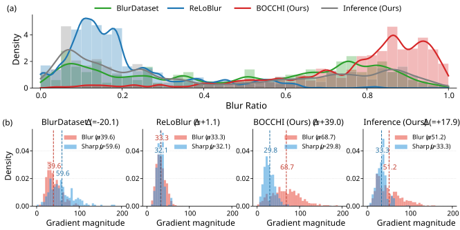
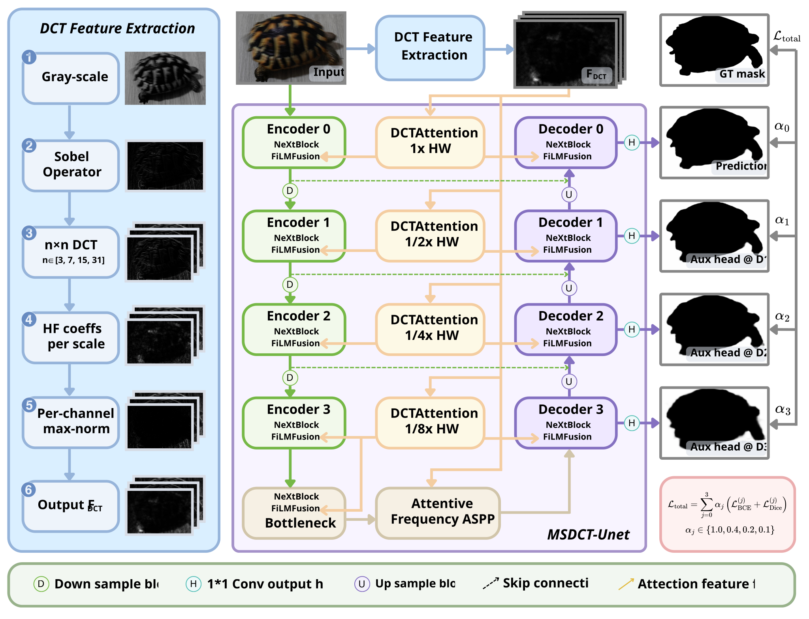
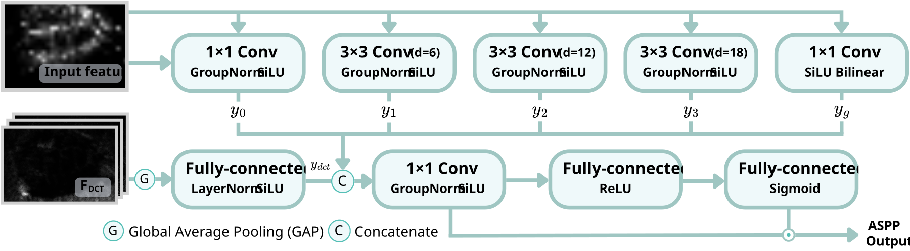

Local motion blur detection requires pixel-level localization of blurred regions. Existing benchmarks let models rely on gradient shortcuts that fail to transfer. We introduce BOCCHI (Blurred Objects Captured across Cameras with Human-annotated Imagery), a real-captured benchmark of 633 pixel-annotated images whose textured blurred foregrounds against varied backgrounds defeat these shortcuts, and propose MSDCT-UNet (Multi-Scale Discrete Cosine Transform UNet), a frequency-aware encoder-decoder injecting multi-scale DCT priors through DCT Attention and FiLM. MSDCT-UNet ranks first in in-domain mIoU (0.850, +1.25 pp over the second-best baseline) and boundary localization on BOCCHI. BOCCHI-trained models outperform every other training source on cross-dataset transfer with fewer training images: +2.2 pp mIoU over OMoBlur (994), +13.8 pp over ReLoBlur (1,200), and +34.9 pp over CUHKmotion (200).
Abstract
BOCCHI Dataset
633 real-captured images across 5 cameras and diverse indoor/outdoor scenes. Toggle between RGB inputs and pixel-level blur masks.
Two Distinguishing Properties

(a) Blur-ratio distribution across 5 datasets: CUHKmotion spans uniformly (200 imgs); ReLoBlur (1,200) and BOCCHI (633) concentrate at low ratios; OMoBlur (994) occupies the moderate range; Inference Dataset (572) spans the intermediate regime. (b) Per-dataset distribution of mean gradient in blur vs. sharp regions. BOCCHI shows the largest PR25/μblur ratio (0.68) — the sharp-region bottom-25% gradient overlaps the blur mean — defeating gradient-based shortcuts.
Qualitative Comparison
Switch tabs to compare predictions across methods on the BOCCHI validation set. Each tab shows 4 input–prediction pairs across multiple cases.
Selected success cases where MSDCT-UNet outperforms baselines. Predictions are binary masks (white = sharp, black = predicted blur).
Quantitative Results
In-Domain Performance (on respective dataset's validation set)
Per-cell metrics: mIoU / BdF1. Cells highlighted as 1st / 2nd / 3rd per column. *NAFNet × OMoBlur omitted (aspect-ratio width collapse).
| Method | BOCCHI | CUHKmotion | ReLoBlur | OMoBlur | ||||
|---|---|---|---|---|---|---|---|---|
| mIoU | BdF1 | mIoU | BdF1 | mIoU | BdF1 | mIoU | BdF1 | |
| MSDU-Net | 0.796 | 0.561 | 0.640 | 0.330 | 0.923 | 0.820 | 0.772 | 0.667 |
| BiSeNetV2 | 0.760 | 0.470 | 0.525 | 0.166 | 0.916 | 0.800 | 0.749 | 0.613 |
| STDC1 | 0.778 | 0.457 | 0.550 | 0.260 | 0.918 | 0.795 | 0.748 | 0.631 |
| STDC2 | 0.799 | 0.495 | 0.558 | 0.197 | 0.918 | 0.800 | 0.755 | 0.627 |
| NAFNet | 0.760 | 0.452 | 0.523 | 0.213 | 0.914 | 0.821 | N/A* | N/A* |
| DDRNet-23 | 0.701 | 0.351 | 0.520 | 0.172 | 0.910 | 0.766 | 0.703 | 0.583 |
| Cellpose3 | 0.838 | 0.643 | 0.665 | 0.403 | 0.927 | 0.850 | 0.791 | 0.675 |
| KDSNet-R50 | 0.783 | 0.469 | 0.549 | 0.219 | 0.918 | 0.803 | 0.748 | 0.627 |
| KDSNet-R101 | 0.773 | 0.446 | 0.544 | 0.243 | 0.921 | 0.812 | 0.744 | 0.630 |
| MSDSeg | 0.714 | 0.360 | 0.517 | 0.202 | 0.909 | 0.766 | 0.721 | 0.607 |
| BEVANet | 0.778 | 0.518 | 0.548 | 0.217 | 0.919 | 0.798 | 0.721 | 0.622 |
| ESMDL-UNet | 0.677 | 0.270 | 0.432 | 0.139 | 0.788 | 0.364 | 0.627 | 0.552 |
| MSDCT-UNet (Proposed) | 0.850 | 0.683 | 0.640 | 0.369 | 0.930 | 0.851 | 0.775 | 0.664 |
Cross-Dataset Generalization (Inference Dataset, no fine-tuning)
Per-cell metrics: mIoU / Dice / Recall on Inference Dataset (572 images). Average row colored to highlight BOCCHI as the strongest training source. *NAFNet × OMoBlur omitted (OMoBlur Average aggregates 12 of 13).
| Method | Trained on BOCCHI (633) |
Trained on OMoBlur (994) |
Trained on ReLoBlur (1,200) |
Trained on CUHKmotion (200) |
|---|---|---|---|---|
| mIoU / Dice / Rec | mIoU / Dice / Rec | mIoU / Dice / Rec | mIoU / Dice / Rec | |
| MSDU-Net | 0.609 / 0.830 / 0.876 | 0.616 / 0.805 / 0.810 | 0.556 / 0.758 / 0.736 | 0.142 / 0.307 / 0.268 |
| BiSeNetV2 | 0.539 / 0.791 / 0.843 | 0.526 / 0.704 / 0.666 | 0.470 / 0.695 / 0.651 | 0.248 / 0.445 / 0.455 |
| STDC1 | 0.541 / 0.789 / 0.840 | 0.496 / 0.657 / 0.597 | 0.283 / 0.518 / 0.538 | 0.197 / 0.310 / 0.286 |
| STDC2 | 0.577 / 0.823 / 0.882 | 0.530 / 0.705 / 0.655 | 0.269 / 0.443 / 0.437 | 0.182 / 0.288 / 0.277 |
| NAFNet | 0.568 / 0.818 / 0.882 | N/A* | 0.478 / 0.730 / 0.718 | 0.285 / 0.529 / 0.533 |
| DDRNet-23 | 0.517 / 0.800 / 0.877 | 0.489 / 0.673 / 0.626 | 0.462 / 0.704 / 0.665 | 0.292 / 0.548 / 0.490 |
| Cellpose3 | 0.662 / 0.858 / 0.910 | 0.628 / 0.825 / 0.848 | 0.555 / 0.758 / 0.744 | 0.160 / 0.324 / 0.306 |
| KDSNet-R50 | 0.557 / 0.809 / 0.871 | 0.528 / 0.717 / 0.684 | 0.275 / 0.465 / 0.465 | 0.225 / 0.424 / 0.369 |
| KDSNet-R101 | 0.557 / 0.794 / 0.835 | 0.525 / 0.718 / 0.696 | 0.274 / 0.433 / 0.423 | 0.230 / 0.432 / 0.372 |
| MSDSeg | 0.518 / 0.816 / 0.901 | 0.547 / 0.788 / 0.828 | 0.463 / 0.726 / 0.711 | 0.141 / 0.128 / 0.121 |
| BEVANet | 0.552 / 0.804 / 0.861 | 0.535 / 0.746 / 0.731 | 0.484 / 0.718 / 0.692 | 0.271 / 0.493 / 0.434 |
| ESMDL-UNet | 0.518 / 0.806 / 0.873 | 0.458 / 0.698 / 0.684 | 0.391 / 0.631 / 0.593 | 0.231 / 0.397 / 0.352 |
| MSDCT-UNet (Proposed) | 0.610 / 0.848 / 0.925 | 0.610 / 0.783 / 0.781 | 0.563 / 0.815 / 0.897 | 0.183 / 0.290 / 0.226 |
| Average | 0.563 / 0.814 / 0.875 | 0.541 / 0.735 / 0.717* | 0.425 / 0.646 / 0.636 | 0.214 / 0.378 / 0.345 |
BOCCHI-trained models outperform every other training source on cross-dataset transfer with the fewest training images: +2.2 pp mIoU over OMoBlur (994), +13.8 pp over ReLoBlur (1,200), +34.9 pp over CUHKmotion (200).
Per-Image Comparison: MSDCT-UNet vs Best Baseline
Each dot is one validation image (n=63). x = mIoU of the strongest baseline on that image; y = mIoU of MSDCT-UNet. Above the diagonal: we win; below: best baseline wins. Highlighted dots are the 8 cases shown in the qualitative grid below; click any to jump there.
Method Overview

Left: DCT Feature Extraction (grayscale + Sobel → multi-scale local DCTs at n ∈ {3,7,15,31} → 57-channel FDCT). Middle: 4-stage encoder-decoder with NeXtBlock + FiLM fusion, an Attentive Frequency ASPP bottleneck, and stage-specific DCT Attention. Right: Deep supervision over the main and three auxiliary heads.
Key Modules
DCT Attention

Multi-head, position-dependent frequency weighting over 57 DCT channels with SE-gating and temperature-scaled softmax.
FiLM Fusion

Frequency-conditioned affine modulation prevents strong spatial edges from overriding weaker frequency cues.
AFASPP

Attentive Frequency ASPP fuses multi-scale spatial context with global frequency evidence at the bottleneck.
Full method details, including DCT extraction pseudocode and ablations, are available in the paper and supplementary.